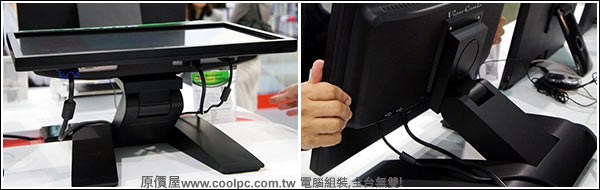
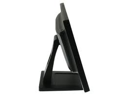
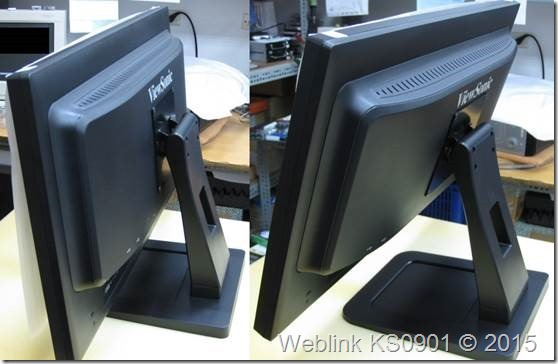

不好意思再請問一下，這台ASUS的主機跑貴公司軟體順暢嗎？
如果這台華碩主機OK的話能不能請你幫我推薦一台萬元左右的20吋
觸控螢幕呢？
謝謝你
http://24h.m.pchome.com.tw/prod/DSAA31-A80306225?q=/S/DSAA35
1 個回答
您好
1.如果您有辦法自行安裝windows,依效能和價格來看是不錯的
以CPU的規格來看 在下面列表 1000分以上的CPU,RAM 4G以上都有不錯表現
http://www.cpubenchmark.net/singleThread.html
這台輸出是HDMI 和Mini Display Port
線材上您必須加購HDMI->DVI轉接線 ,露天上有很多
2.電容式當然是比較好,不需太用力,就跟划手機一樣,電阻式就必須要施點壓力,所以常看到很多店員會拿支鉛筆的橡皮頭點POS機,都是電阻式的
有品牌的電容式觸控螢幕並不多 ASUS ViewSonice
http://24h.pchome.com.tw/prod/DSAB05-A68523990
要注意的是最大頃斜角度 ,像這台Viewsonice是附送的底座是20度
這跟您店面的桌面有關,如果桌面太低(不及腰),就必須要向viewsone經銷商加購可調整的底座(購買前可先問問看還有沒有貨?)

如果桌面較高 就不用在意頃斜角度了
貼些網路上的TD2220照片給您參考


開箱文
http://www.coolpc.com.tw/phpBB2/viewtopic.php?f=67&t=102467